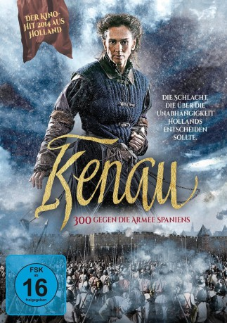

#7107 1572 - Die Schlacht um Holland
Alternativ: Kenau
 
 IMDB-Wertung: 6.5 / 10
IMDB-Wertung: 6.5 / 10  Metascore: 0
Metascore: 0 
Im späten Mittelalter ächzen die protestantischen Niederlande unter der Knute der katholischen Spanier. Die selbstbewusste Schiffsbauerin Kenau Simonsdochter Hasselar aus Haarlem würde eigentlich lieber weiter gute Geschäfte machen und dem Feind Tribut entrichten. Doch als ihre jüngste Tochter aufgrund ihrer religiösen Überzeugung auf dem Scheiterhaufen verbrennt, platzt ihr der Kragen, und sie beteiligt sich mit einer kämpfenden Dameneinheit aktiv an der Verteidigung ihrer belagerten Heimatstadt.
Jahr: 2014
Dauer: 112 Minuten
FSK: 16
Land: Niederlande Studio: Ascot Elite Home EntertainmentTonspuren:
Untertitel: Deutsch,
Auflösung: 1080p (1920x808) Größe: 3317 MB
Genre: Action, Abenteuer, Geschichte
Regisseur: Maarten Treurniet
Drehbuch: Marnie Blok
Soundtrack:
Darsteller:
 Barry Atsma als Wigbold Ripperda
Barry Atsma als Wigbold Ripperda Attila C. Arpa als Don Diego
Attila C. Arpa als Don Diego- Monic Hendrickx als Kenau Simonsdochter Hasselaer
- Lisa Smit als Gertruide
- Peter Van den Begin als Jacob
- Matthijs van de Sande Bakhuyzen als Pieter Ripperda
- Antoin Cox als Teun
- Simon Nader als Julio, Spanish Officer
- Steven van Watermeulen als Marnix van St-Aldegonde
 Sallie Harmsen als Kathelijne
Sallie Harmsen als Kathelijne- Sophie van Winden als Magdalena
- Thomas Ryckewaert als Dominique
- Jaap Spijkers als Duyff
- Bert Luppes als Priest
- Gabriella Fon als Leida
- Eva Bartels als Alda
- Zoltan Papp als Executioner
- Anne-Marie Jung als Bertha
- Titánia Valentin als Mathilde
- Francisco Olmo als Alva
- Pau Cólera als Don Toledo
- Jara Lucieer als Beatrijs
- Dalotti Mark als Farmer family member
- Siegfried Evens als Villager
- Toon Van Overbeke als Villager
- Arnaut Van Vlierden als Villager
- Robin Hermans als Spanish Soldier
- Cisse Michiels als Villager
Datei: X:\2014(A-F)\1572 - Die Schlacht um Holland (2014, FSK16, 1920x808).mkv seit 26.09.2017
Festplatte: HD 2013(I-Z)-2014(A-Z)
 Es gibt insgesamt 119 Filme in der Gruppe '2014(A-F)'
Es gibt insgesamt 119 Filme in der Gruppe '2014(A-F)'